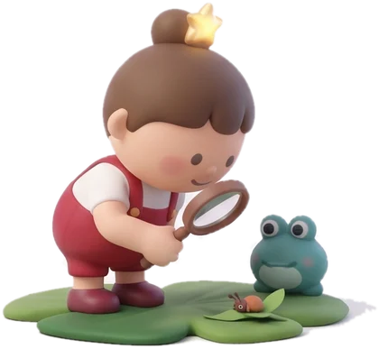

1
The big picture
Frog Baby tipMost classroom management happens before anything goes wrong.
Classroom management is the set of things a teacher does to create a positive, focused place to learn. Most of it happens before anything goes wrong: clear expectations, predictable routines, warm relationships, and engaging lessons. Discipline, meaning how you respond to misbehavior, is only one part of the picture.
Two widely used research summaries point to the same core practices. The National Council on Teacher Quality (NCTQ) calls them the Big Five: rules, routines, praise, misbehavior, and engagement. A systematic review by Simonsen and colleagues (2008) identified five critical features of evidence-based classroom management. The table shows how they line up.
| NCTQ Big Five | Simonsen et al. (2008) critical feature | In this guide |
|---|
| Rules | Post, teach, review, monitor, and reinforce a small number of positively stated expectations | Chapter 2 |
| Routines | Maximize structure in your classroom | Chapter 3 |
| Praise | Use a continuum of strategies to acknowledge appropriate behavior | Chapter 4 |
| Engagement | Actively engage students in observable ways | Chapter 5 |
| Misbehavior | Use a continuum of strategies to respond to inappropriate behavior | Chapters 6 to 9 |
Why practice matters
You need management strategies most in high-stress moments, such as when a student is defiant or the room has lost focus. Reading about a strategy is not enough. NCTQ recommends that teacher candidates practice strategies repeatedly, through role-play and in real classrooms, so that in their own classroom they can respond almost by instinct.
2
Rules and expectations
Frog Baby tipKeep rules few and positive, and teach them like any other lesson.
Rules tell students what success looks like. Effective rules are few (three to five), stated in positive terms, taught like any other lesson, and referred to all year.
From the course
Let students help establish the rules
Build the rules with your class in the first days of school. When students help write them, they understand the reasons and feel ownership. In the Responsive Classroom approach, students later connect consequences to the rules they created, which helps them see consequences as a way to learn and make amends.
ExampleSecond graders share their hopes for the year. The teacher asks, "What rules will help all of us reach our hopes?" The class groups ideas into three rules and everyone signs the poster.
Source: course slides; Responsive Classroom
From the course
Model the ideal behavior and document the rules
Show what each rule looks and sounds like, then post the rules where everyone can see them. Rules are typically written down, reinforced verbally, and modeled by teachers and students during the first weeks, then applied consistently all year.
ExampleFor "Be respectful," the teacher acts out listening to a speaker (eyes on the speaker, quiet hands) and then a non-example, and students say what was different.
Source: course slides; Georgia Southern University Libraries
Write rules in positive terms
A positively stated rule tells students what to do instead of what to stop doing. It gives you something specific to praise.
Positively stated
Negatively stated
Walk inside our classroom.
No running.
Raise your hand and wait to be called on.
Don't shout out.
Keep hands, feet, and objects to yourself.
No hitting or pushing.
Take care of our materials.
Don't break things.
From the course
Write group contracts
For group work, have each group agree in writing on roles and how they will work together. A contract gives you and the group something concrete to come back to when problems arise.
ExampleA fourth-grade science group lists roles (materials manager, recorder, reporter, timekeeper) and two agreements: "Everyone shares one idea" and "We disagree kindly."
Source: course slides
From the course
Set rules at the start and keep expectations consistent
Teach expectations before problems happen, not after. Then respond to the same behavior the same way every day. Consistency is what makes rules believable.
ExampleOn day one, the teacher introduces one rule at a time across the first week, with a short practice and an anchor chart for each.
Source: course slides; Mrs Learning Bee
3
Routines and procedures
Frog Baby tipDon't just tell routines. Model them, practice them, and praise them.
Routines are the predictable "how we do things here" of your classroom: how to come in, get materials, ask for help, line up, and go home. A first-grade teacher with 35 years of experience points out that most management problems are not about students trying to misbehave. They happen when routines are unclear.
You do not need to teach every routine on the first day. Start with the most important ones and keep adding them over the first few weeks.
Routines to plan before the first day
Start of day
- Entering and unpacking
- Morning work
- Attendance and lunch count
- Morning meeting
During lessons
- Attention signal
- Asking for help
- Getting and returning materials
- Turning in work
- What to do when finished early
Moving and leaving
- Transitions between activities
- Lining up and hallway walking
- Bathroom, water, tissues
- Cleaning up and dismissal
Lists adapted from WeAreTeachers and Firstieland.
How to teach a routine: Interactive Modeling
Telling students directions over and over rarely works. Interactive Modeling, a Responsive Classroom practice, shows students exactly what to do and builds in practice and feedback. The elementary steps are:
- Say what you will model and why.
- Model the behavior.
- Ask students what they noticed.
- Invite one or more students to model.
- Ask students what they noticed.
- Have everyone practice.
- Give feedback that names what students did well and redirects clearly when needed.
Source: Responsive Classroom, Interactive Modeling
Example script
Walking in line
Step 1"When we walk in line, we want to get where we're going safely and quietly so other classes can keep learning. Watch what I do."
Steps 2 and 3The teacher walks a short path, eyes forward, hands at sides. "What did you notice?" Students: "You didn't touch the wall." "You stayed behind the person in front."
Steps 4 to 7Two students model, the class names what they saw, then the whole class practices the walk to the door and back. "You kept a space between you and the next person. That's exactly how we keep each other safe."
Adapted from a Responsive Classroom example
More routine strategies
Research-based
Precorrection
Figure out when problems tend to happen (transitions, lining up, coming in from recess) and give a short reminder of the expectation just before that moment.
ExampleBefore recess ends: "When you come back in, hang up your coat, get your reading book, and start reading at your seat. Show me with your fingers how many steps that is."
Source: IRIS Center, Precorrection
From the course
Have set tasks for early finishers
The gap after a student finishes is where off-task behavior often starts. Post a short menu of meaningful options and teach it like any routine. Offering different kinds of free study time gives students choice inside the structure.
ExampleA "Done? Choose one" chart: read your book, finish your word work, write in your journal, or work on the class math challenge.
Source: course slides
From the course
Set goals at the beginning of class
Post and say what students will learn or do today. Students who know what success looks like settle in faster.
Example"Today we are learning to find the main idea. By the end, you'll be able to tell your partner the main idea of one paragraph in a single sentence."
Source: course slides
Classroom tip
Use hand signals for common needs
Silent signals let students meet routine needs without interrupting the lesson. Teach each signal and post a chart.
ExampleOne finger for a tissue, crossed fingers for the restroom, a fist for water. The teacher nods or shakes her head without stopping.
Source: WeAreTeachers; Edutopia
4
Praise and acknowledgment
Frog Baby tipName the student, name the behavior, and connect it to the expectation.
"Catch students being good." When students are recognized for following expectations, they tend to keep doing it, and classmates follow the rules so they get positive attention too. But praise is harder to use well than it looks. NCTQ notes that praise given for no reason, for example only to boost self-esteem, can actually lower motivation.
ContingentEarned
Praise follows the behavior you want to see. It responds to something the student actually did.
SpecificNames the behavior
The student knows exactly what earned the praise.
ContextualizedFits the student
Use praise sparingly for things a student would do anyway. Save emphasis for what is new or hard.
Source: NCTQ, Promising Practices in Classroom Management Training
Behavior-specific praise in three steps
Behavior-specific
General
"Jordan, you took your seat quickly and got your notebook out. Thank you."
"Good job!"
"Table 3, you shared the glue sticks without being asked. That's being a good teammate."
"Nice, everyone."
"Maya, you tried a new strategy when the first one didn't work. That's persistence."
"You're so smart."
"Thank you for walking in the hall to keep everyone safe."
"Thank you, Daphne."
Praising strategies instead of intelligence also builds a growth mindset. See Growth mindset: Carol Dweck in chapter 5.
Age matters
Public or private praise?
Younger elementary students often respond well to enthusiastic praise in front of the class. Older elementary students may prefer quieter praise, such as a comment at their desk or a sticky note. When you can, learn each student's preference.
Sources: IRIS Center; Wright (2012), via Georgia DOE
Teacher language
Reinforcing language starters
Responsive Classroom calls this reinforcing language: naming concrete, specific behaviors so students build on their strengths. Try these openers:
I noticed...I see...You followed our rule ___ by...Did you notice...
Source: Responsive Classroom, Reinforcing, Reminding, Redirecting
Research-based
Positive greetings at the door
Greet each student by name as they enter, add a positive word, and remind them of the first task. In a randomized study of middle school classrooms, this raised academic engagement by about 20 percentage points and lowered disruptive behavior by about 9 points. Teachers found it easy to do. Smaller studies in elementary settings point the same way.
Example"Good morning, Luis! I like how you came in ready. Grab your journal and start the question on the board."
Source: Cook, Fiat, & Larson (2018), University of Minnesota; Lawson (2023)
From the course
Other ways to acknowledge success
- Tangible rewards: points, stickers, or privileges tied to clear, earned behavior.
- Celebrations: mark class milestones together, such as a short party when the class reaches a goal.
- Positive calls and emails home: see chapter 10.
- Nonverbal praise: a thumbs up, a nod, or a smile.
Source: course slides; MAUSD Responsive Discipline
Try it in your placement
Teacher candidates at Hunter College watch a video of their own teaching and count positive and negative statements to see whether the positives come out ahead. You can do the same with any recorded lesson.
5
Engagement and growth mindset

Frog Baby tipBusy learners have less time for trouble. Give everyone a way to respond.
Students who are busy learning have less room for off-task behavior. The course slides name four foundations: be excited about the learning yourself, use interesting questions or scenarios to guide the unit, know what interests your students, and vary your approach.
Research-based
Opportunities to respond (OTR)
Give students many chances to answer, about 3 to 5 per minute during practice, and let everyone respond at once instead of one student at a time. Frequent responding keeps students on task across grade levels.
ExampleDuring a phonics review: "Everyone, what sound does 'sh' make? Say it on three." Then: "Thumbs up if 'ship' has the 'sh' sound, thumbs down if not." Then whiteboards: "Write a word that starts with 'sh.'"
Source: IRIS Center, Opportunities to Respond
Research-based
Active supervision
Move around the room, scan, and interact with students, especially during independent work and transitions. Being close to students prevents many small behaviors before they start.
ExampleDuring partner reading, the teacher circulates in a loop, crouches by pairs to listen for 20 seconds, gives a quick specific comment, and glances up to scan the room before moving on.
Source: IRIS Center, Active Supervision; University of Louisville ABRI videos
Research-based
Choice making
Offer structured choices about how, where, or in what order students complete a task. Choice is especially helpful for students who tend to avoid work they don't enjoy, and the course slides also list it as a way to keep disciplined students from shutting down.
Example"You can do the even problems or the odd problems." "You can read at your desk, on the rug, or at the back table."
Source: IRIS Center, Choice Making; course slides
Research-based
High-probability requests
Before a task a student usually resists, give three to five quick, easy requests the student almost always follows. The momentum makes the harder request easier to accept.
Example"Can you hand me that marker? Thanks. Write your name at the top. Great. Circle problem one. Now read problem one to me."
Source: IRIS Center, High-Probability Requests
More engagement ideas from the course
Interview students
Learn their interests early with a short survey or conversation, then use them in examples and choices.
Build excitement for lessons
Tease what is coming next and share your own enthusiasm.
Assign open-ended projects
Tasks with many possible answers invite more students in.
Do not grade formative checks
Low-stakes practice lowers the risk of trying and making mistakes.
Consider peer teaching
Explaining to a classmate deepens learning for both students.
Gamify personal learning plans
Levels, badges, and goals make individual progress visible.
Use adaptive ed tech
Tools that adjust to each student keep work at the right challenge level.
Encourage initiative
Praise effort and strategy so students build a growth mindset and take on challenges. See growth mindset below.
Remove distractions
Arrange the room so tempting objects and high-traffic areas don't pull attention away.
Growth mindset: Carol Dweck
Course video
Developing a Growth Mindset with Carol Dweck
Psychologist Carol Dweck explains that students' beliefs about their abilities shape how they approach challenges, respond to mistakes, and keep going. A growth mindset is the belief that intelligence and abilities can grow through learning, good strategies, effort, and support.
Watch the video on YouTube
Fixed mindset vs. growth mindset
Fixed mindset
Growth mindset
Intelligence is fixed.
Intelligence can develop.
Avoids difficult tasks.
Embraces challenges.
Sees mistakes as failures.
Sees mistakes as chances to learn.
Focuses on proving ability.
Focuses on improving ability.
May give up after setbacks.
Tries new strategies and persists.
In Dweck's research, some children welcomed difficult problems, while others took difficulty as proof that they were not smart.
The power of "yet"
Replace failure with "not yet"
Adding one word turns a judgment about ability into a step in an ongoing process.
Student says"I can't solve this problem."
Reframe"I can't solve this problem yet."
Student says"I'm not good at math."
Reframe"I haven't mastered this skill yet."
Feedback
Praise the learning process, not intelligence
Recognize students' strategies, focus, persistence, and improvement. This connects directly to behavior-specific praise in chapter 4.
Instead of
Try
"You're so smart!"
"You used an effective strategy."
"You're a natural at math."
"Your practice helped you improve."
"Great job getting everything right!"
"I noticed how you checked and revised your work."
Learning from mistakes
Dweck describes research suggesting that students with a growth mindset pay closer attention to their errors and work harder to correct them. Some programs teach students that taking on challenging work strengthens connections in the brain. The video also shares examples of teachers, including teachers in historically underserved communities, who built growth-mindset classrooms and reported large gains in achievement.
Five things teachers can do
1Normalize mistakes
Treat errors as information for learning.
"Great mistake! What does it tell us about where to look next?"
2Give process-focused feedback
Name strategies, progress, and thoughtful effort.
"You drew a model before solving. That helped you see the problem."
3Offer productive challenges
Let students work just beyond their level, with support.
A "challenge problem" on the board with hint cards students can use.
4Use "not yet" language
Show that today's performance does not set the limit.
A "Not yet" stamp in place of an X on practice work.
5Value improvement
Recognize progress, not just grades.
Students graph their weekly fluency scores and set a next goal.
Big takeaway
Growth mindset is not just telling students to work harder. It means creating a classroom where students get meaningful feedback, use effective strategies, take on challenges, and see that they can improve.
Think about itA 2nd grader says, "I'm just not good at reading." What would you say back? How might your feedback accidentally encourage a fixed mindset?
Summary of the video "Developing a Growth Mindset with Carol Dweck." Classroom examples in the "Five things" cards illustrate each idea.
6
Responding to misbehavior
Frog Baby tipStart with the smallest response that works. Keep it calm and brief.
Even with great prevention, students will make mistakes with behavior, just as they do with reading or math. Treat a behavior error like an academic error: correct it calmly, then teach and practice the right way.
PBIS recommends a continuum: start with the least intrusive response that will work, and move up only if needed. Whatever you do, keep it calm, consistent, brief, immediate, and respectful.
The continuum, from least to most intrusive
Planned ignoring
For minor behavior that seeks attention and doesn't disrupt others, keep teaching without reacting. Pair it with praise the moment the student does the right thing.
Proximity
Move closer to the student while you keep teaching. Your presence alone often redirects.
Nonverbal cue
Eye contact, "the look," a hand signal, or a tap on the desk. It signals you noticed without calling anyone out in front of the class.
Praise others nearby
Praise a nearby student who is meeting the expectation: "Kai has his book open to page 12." It reminds everyone of the expectation.
Redirect
Briefly restate the expected behavior: "Daphne, markers are for writing on paper."
Specific error correction
Quietly name the behavior to stop and the behavior to do instead, then move on.
Reteach and give a choice
Show and practice the expectation again. Offer two acceptable options.
Conference
Privately describe the problem and the alternative, explain why the alternative is better, practice, and give feedback.
Logical consequence
A response connected to the behavior that helps the student fix it and learn (see below).
Sources: Marshall University, Continuum of Responses; Georgia DOE, Error Correction; Edutopia, How to Develop "The Look"; Center on PBIS, Supporting and Responding to Behavior
When do you ignore, and when do you address?
There is no single rule, but a few questions help you decide quickly.
Usually fine to let go or use a quiet cue
- The behavior is minor and brief (pencil tapping, a sigh, a short whisper).
- It is not stopping the student or others from learning.
- No one is unsafe or hurt.
- Reacting would give attention the student is seeking or interrupt the whole class.
Address it, promptly and privately if possible
- Anyone's safety is at risk.
- The behavior hurts or targets another person, such as an unkind comment about a classmate.
- It is disrupting other students' learning.
- It keeps happening or is getting bigger after quieter responses.
Reminding and redirecting language
Reminding
Before or just as behavior slips
Brief, calm prompts that help students remember the expectation themselves. They work best once the behavior has been taught and practiced.
Examples"Show me what you do to treat others with respect." "Remember what we do before we start independent work."
Redirecting
When behavior is off track
A clear, brief, non-negotiable statement that names the desired behavior. Use a matter-of-fact tone and neutral body language, and phrase it as a statement, not a question.
Examples"Jed, walk." "Markers are for drawing on paper." "Put the ball in the bin and come to the rug."
Sources: Responsive Classroom; MAUSD Responsive Discipline
Logical consequences
Unlike punishment, logical consequences are respectful, relevant, and realistic (Ruth Charney's "three R's"). They focus on the behavior, not the child's character, and help the student fix the problem and learn from it. Responsive Classroom describes three types.
You break it, you fix it
The student repairs the harm, whether accidental or on purpose.
ExampleA student spills paint and helps clean it up. A student who hurt a friend's feelings helps make it right with an apology of action.
Loss of privilege
The student briefly loses a privilege directly connected to the behavior. It should be a privilege, not a need like recess or art.
ExampleA student waving scissors uses them only with the teacher nearby for the rest of art time.
Take a break
A short, positive time-out in a calm spot to regain self-control, then rejoin the group. It is not a punishment or banishment.
ExampleA student who keeps calling out during a game moves to the break chair for a minute, then returns when ready.
Sources: Responsive Classroom, Logical Consequences; Charney, The Three R's; brightwheel; WeAreTeachers
Keeping disciplined students from shutting down
From the course slides. Discipline works best when the student keeps their dignity and the relationship stays intact.
Respond privately
- Discipline privately when possible.
- Address inappropriate behavior quickly.
- Avoid punishing the whole class for a few students.
- Have a space where a student can have private time.
Stay steady
- Remain neutral during conflicts.
- Keep expectations consistent.
- Model the behavior you want.
- Remember that student dignity matters.
Look deeper
- Search for the root cause of the misbehavior.
- Listen to students.
- Create individual plans when needed.
- Keep reinforcing appropriate behavior with praise.
7
Disrespectful behavior
Frog Baby tipStay calm, keep it private, and focus on the behavior, not the child.
Disrespect can feel personal, especially to a new teacher. Understanding where it comes from helps you respond calmly instead of reacting.
Why it happens
According to psychologist Tim Elmore:
- Unlike past generations, kids today are not conditioned to respect their elders.
- Kids feel empowered by their exposure to information.
- Kids do not see respect modeled or earned by older generations.
What Elmore recommends
- Live a life worthy of respect.
- Ask questions and be kind.
- Don't raise your voice unnecessarily.
- Take the initiative to meet with them.
- Demonstrate respect.
A three-step response in your classroom
Step 1Set communication expectations
Teach how people talk to each other in your room: tone, words, and listening.
ExampleCo-create a "How we disagree respectfully" chart with sentence frames like "I see it differently because..."
Step 2Point out specific examples
Name exactly what crossed the line, privately and calmly. Focus on the behavior, not the child.
Example"When you rolled your eyes and said 'whatever,' that was disrespectful. Try again: tell me what you need."
Step 3Meet with the family and child
If nothing changes, hold a meeting with the parents and the child together, so everyone hears the same message and plans next steps.
Source: course slides; Charney, Examples of Logical Consequences
8
When behavior escalates
Frog Baby tipThe more upset a student becomes, the calmer you need to be.
Intense behavior usually builds through predictable phases, known as the acting-out cycle. The earlier you notice the signs, the more likely a calm response can bring the student back.
Calmon task
Triggera stressor
Agitationoff balance
Accelerationengaging adult
Peakmost intense
De-escalationwinding down
Recoveryreturning
Agitation
Notice early and show empathy
Look for signs like fidgeting, withdrawing, or sighing. Use supportive language, offer a short break or a choice, and move close in a calm way. Simple strategies at this point can often return the student to calm.
Example"This problem looks frustrating. Do you want to start with number 3 or take two minutes at the calm corner first?"
Acceleration and peak
Stay calm and prioritize safety
Speak in a calm voice and use few words. Give space and avoid power struggles. The more upset the student becomes, the calmer the adult needs to be. If anyone is in danger, focus on safety, remove the audience if needed, and follow your school's crisis plan.
De-escalation
Restore calm with dignity
The student may seem confused, withdraw, or blame others. Don't lecture yet. Restore calm to the classroom, continue the regular activity, and help the student rejoin with dignity.
Recovery
Debrief briefly, later
Once you and the student are both calm, hold a short private debrief of 3 to 5 minutes: what happened, what the student could do next time, and how to make things right. Debriefing too early can backfire.
Sources: IRIS Center, Acting-Out Cycle (Peak, De-escalation, Recovery); Wisconsin DPI; NASET
If you don't have strong support staff
One of the course questions asks what to do with extreme behavior when you lack a counselor or strong administration. As a student teacher, always follow your cooperating teacher's and school's safety procedures first. Know how to call the office or a nearby teacher for help while keeping other students supervised, write down what happened, communicate with the family, and ask for a consultation with the school psychologist, special education team, or district behavior specialist.
See also: Senya, De-Escalating Student Behaviors
9
Restorative practices
Frog Baby tipBuild community first, then repair harm together.
Restorative practices focus on relationships: building community before problems happen and repairing harm after. They work alongside PBIS and social-emotional learning, and they are not about letting students get away with things. Many elementary teachers already have a natural starting point in the morning meeting circle.
Proactive circle
Build community first
Students sit in a circle where everyone can see each other. Only the person holding a talking piece speaks. Begin with low-risk prompts so students get comfortable with the format.
Example prompts"Share one thing that made you smile today." "What helps you feel safe at school?" "What does being a kind classmate look like?"
Responsive circle or conversation
Repair harm after a conflict
Used for hurt feelings, exclusion, name-calling, or friendship problems. The goal is learning and repairing. Kid-friendly restorative questions include:
QuestionsWhat happened? What were you thinking or feeling? Who was affected, and how? What can we do to make it right?
Sources: The Responsive Counselor; San Diego Unified counseling page; Edutopia, Talking Circles; Edutopia, Circling Up
10
Working with families
Frog Baby tipMake your first call home a good-news call.
Families are your partners. When the first contact is positive, later conversations about problems go much more smoothly.
Research-based
Make positive calls and emails home
Researchers Matthew Kraft and Shaun Dougherty found that frequent teacher-family communication raised the odds of homework completion by about 40 percent and cut the times teachers had to redirect students by about 25 percent. A good-news call can take three minutes.
Example"Hi, this is Ms. Rivera, Ava's teacher. Nothing is wrong. I'm calling because Ava helped a new student find her way all day today, and I wanted you to know."
Sources: Edutopia, A Phone Call Home Makes All the Difference; Edutopia, The Power of the Positive Phone Call Home
Practical tips
When the call is harder
- Make sure your first contact with each family is positive.
- Open by saying the child is safe, so the parent can listen instead of worry.
- Describe what happened factually and share what you have already tried.
- Ask for the family's perspective; they may know what helps at home.
- If a pattern continues, meet with the parents and the child together.
- Offer more than one way to communicate, since some parents can't take calls at work.
Sources: Edutopia, 6 Tips for Difficult Phone Calls; TeachThought; course slides
11
From learning to practice
Frog Baby tipRecord yourself teaching. Video is a great coach.
NCTQ's promising practices describe how strong teacher preparation programs build management skill: learn the Big Five, plan on paper, practice live, and get feedback. Here is how you can use that sequence during your own field experiences.
Observe with a focus
What to look for in your placement
Classrooms are full of action, and a general observation rarely focuses on anything. Go in with specific questions:
- How does the teacher teach and reinforce rules?
- What routines are in place, and how are they cued?
- What does praise sound like, and how often?
- What happens right after a minor disruption?
- How does the lesson keep students engaged and paced?
Practice and feedback
Make the most of student teaching
- Ask to teach a routine yourself, not only content lessons.
- Ask your cooperating teacher for detailed feedback on management.
- Video a lesson and watch yourself: count positive and negative statements and check your pacing.
- Look at the observation form you will be evaluated on, and practice each management item before you are observed.
- Write a classroom management plan and classroom procedures, then test them in practice.
Source: NCTQ, Promising Practices in Classroom Management Training, including examples from Great Basin College, Western Washington University, and the University of Virginia.
12
Questions and resources
Frog Baby tipKeep growing. These free resources go deeper.
Questions to keep thinking about
- Think about classrooms where you have been a student or observer. What framework created a positive, focused environment, and how did the teacher build it?
- When do we just ignore behavior, and when do we address it?
- How do you filter what students talk about in the classroom?
- What do you do if you do not have a counselor or strong administration and you are dealing with extreme behavior?
- How might a teacher's feedback unintentionally encourage a fixed mindset?
- What is the difference between praising effort and praising effective learning strategies?
- How can teachers encourage a growth mindset while keeping high academic expectations?
- How might growth-mindset principles shape classroom assessment and grading?
Go deeper
IRIS Center: Addressing Challenging Behaviors (Elementary)Free modules with video examples of praise, precorrection, active supervision, OTR, and choice.
IRIS Center: Understanding the Acting-Out CycleWhat each phase looks like and what to do, with classroom videos.
Center on PBIS: Classroom PBISThe national center's overview of evidence-based classroom practices.
Supporting and Responding to Behavior (PDF)Practical guide to classroom PBIS strategies with scenarios.
Responsive ClassroomElementary practices: Morning Meeting, Interactive Modeling, teacher language, logical consequences.
Behavior-Specific Praise Tip Sheet (PDF)Vanderbilt Kennedy Center guide with examples and non-examples.
Behavior-Specific Praise VideoShort elementary example and non-example.
Edutopia: 8 Small but Impactful Classroom Management ShiftsResearch-backed tips on presence, nonverbal cues, and tone.